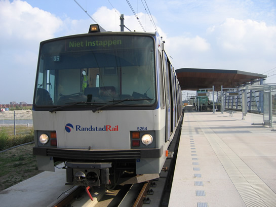

Vervanging wisselcomplexen Waalhaven in herfstvakantie en meer...
- dinsdag 02 december 2008 20:55
- Geschreven door Joachim
In week 43 (maandag 23 t/m vrijdag 27 oktober) worden de wisselcomplexen Waalhaven I en Waalhaven II vervangen. Dit betekent dat er geen metroverkeer mogelijk is op de Erasmuslijn tussen de stations Slinge en Tussenwater. Op dit traject wordt voor vervangend busvervoer gezorgd. De bussen (lijnen 98 en 99) doen alle tussengelegen stations aan. Op de Calandlijn worden extra metro's ingezet, om de passagiersstromen op het tracé Hoogvliet - Beurs v.v. aan te kunnen. De RET start vanaf a.s. maandag een uitgebreide informatiecampagne.
De vernieuwing van de wisselcomplexen aan weerszijden van emplacement Waalhaven is noodzakelijk. De afgelopen jaren zijn de sporen ter plaatse verzakt en is het spoor onstabiel geworden.

Ook wisselcomplex Waalhaven II wordt vervangen (archieffoto).
RandstadRail
Vanaf a.s. maandag wordt het proefbedrijf opgestart op het RandstadRail-tracé tussen de stations Nootdorp en Den Haag Centraal. Concreet betekent dit dat er volgens dienstregeling gereden gaat worden, zónder passagiers. De metrobestuurders worden op het eerder henoemde traject heropgeleid. Wanneer het proefbedrijf zonder problemen verloopt wordt RandstadRail in z'n geheel op 29 oktober 2006 in gebruik genomen voor exploitatie met passagiers, zo laat de Stadsregio Rotterdam en Stadsgewest Haaglanden weten.
Behalve het metrotracé wordt ook het proefbedrijf van de HTM tussen de tramhalten Den Haag Monstersestraat en Zoetermeer Javalaan opgestart. Ook dit tracé moet op 29 oktober 2006 in exploitatie gesteld worden.
Inmiddels zijn op alle stations van de RandstadRail Erasmuslijn de dynamische reizigersinformatiepanelen metro/sneltram (DRIMS) in gebruik genomen. In het DRIMS-systeem van RandstadRail wordt niet, zoals gewend bij de metro, de treinlengte aangegeven, maar wordt de tekst "Verwacht" aangegeven wanneer de metro op het punt staat te vertrekken.

Metrorijtuig 5264, gefotografeerd vanaf het tramperron op station Leidschenveen.
Meld Geweld
Op 26 september werd een extra metrotrein ingezet op het traject Centraal Station - Slinge v.v. De extra rit werd ingepland ten behoeve van opnamen voor de de campagne "Meld Geweld in het openbaar vervoer". Ook op station Wilhelminaplein werd gefilmd. Er werd een vierwagentrein Type B (serie 5300) gebruikt.
Steeds meer medewerkers in de publieke sector krijgen te maken met geweld, ook in het openbaar vervoer. De campagne roept openbaarvervoer-reizigers op in actie te komen wanneer zij getuige zijn van geweld. De campagne is een samenwerkingsverband tussen de stichting "Meld Geweld" en de RET. Naast medewerking van de RET aan deze campagne worden in de nabije toekomst op diverse RET-verkooppunten "OK-punten" gerealiseerd. Slachtoffers of getuigen van geweld kunnen hier een veilig heenkomen vinden.
CAO-akkoord
De RET-directie en de vakbonden hebben op donderdag 5 oktober alsnog een akkoord bereikt over de CAO van het RET-personeel. Acties in de vorm van stakingen of vrij reizen zijn hiermee van de baan. De gemeente Rotterdam draagt zorg voor het behouden van de arbeidsvoorwaarden als de RET in de toekomst een concessie verliest en het personeel over gaat naar een anders vervoersbedrijf. Daarbij krijgen alle RET-medewerkers per 1 januari 2007, wanneer de RET overgaat in RET NV, een bonus die varieert van 795 tot 1250 euro bruto, dit afhankelijk van het aantal dienstjaren. Deze bonus kost de RET ongeveer drie miljoen euro. Overigens laten de vakbonden in het akkoord weten geen voorstander te zijn van de fusie met Connexxion in het nieuwe busbedrijf "Randstadbus".
5348
Rijtuig 5348 werd afgelopen week weer in de actieve reizigersdienst ingezet in combinatie met metrorijtuigen 5328 en 5411. Het metrorijtuig raakte zwaar beschadigd tijdens een brand op 9 februari 2005 en stond maanden op de Centrale Werkplaats Kleiweg voor schadeherstel. Begin 2006 kwam het metrorijtuig weer terug naar de remise Waalhaven, maar door diverse tegenslagen kon het rijtuig pas afgelopen week in dienst gesteld worden.